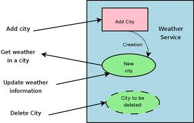

Welcome to my site


I am a first year MISM student. I currently work for Anglepoint consulting. My interests include web programming and mobile development.
My favorite language to program in as of late is Google Apps Script. There are a lot of really cool things you can do if you already use a lot of Google products, like Gmail, Google Docs, or Google Calendar.
One script I wrote iterated through many google spreadsheets to make the same change to all of them. I did this for a friend that is leading a group of interns and needed spreadsheets to track their progress. He wanted the formula in a specific cell changed, and it would have meant opening and changing many many cells by hand. This was a lot easier, and more fun too.
I also really enjoy soccer and really any other sport. Except basketball, I'm really bad at basketball.
What is a web service?
A program that runs on a server to provide information or processing to a third party. An example of a web service might be a program that converts currency when given an amount and a beginning and ending currency. To be a web service, this program would run on a server and would be accessed programatically by another application.
What is a RESTful web service?
REST is a standard that dictates how a web service should act. REST stands for Representational State Transfer. The main principles of REST are:
- All resources are identified uniquely
- Link resources together
- Use of known methods
- Spcify the format of results
- stateless communication
HTTP methods

http://www.w3.org/2005/Talks/1115-hh-k-ecows/#(1)
- GET - retrieve data from server
- POST - create or update data on server
- PUT - like post, except stateless
- DELETE - removes data from server
An example web service:
An example from W3 Schools: http://www.w3schools.com/webservices/ws_use.asp
Sources:
- https://spring.io/understanding/REST
- http://www.infoq.com/articles/rest-introduction
- http://www.w3schools.com/webservices